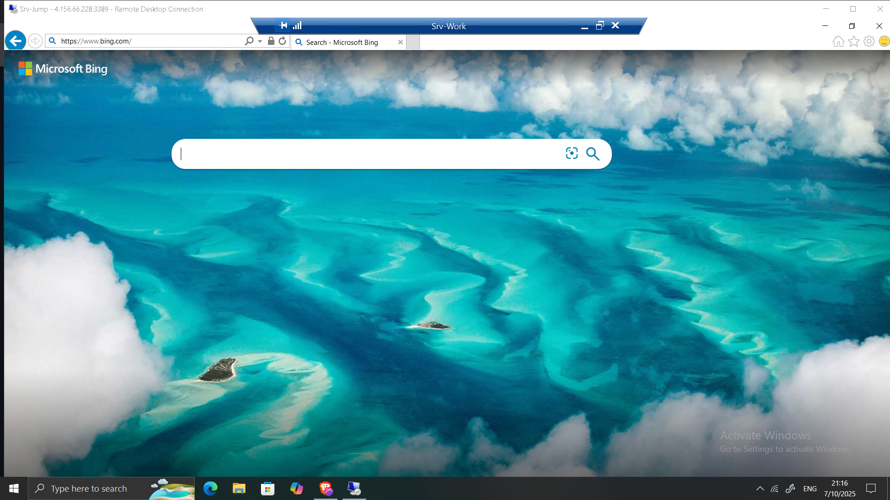

Implementing Network Security with Azure Firewall
Implementing Network Security with Azure Firewall
Timeline: July 2025
Role: Cloud Security Engineer
Skills: Azure Firewall, Network Rules, Application Rules, DNS Configuration, Route Tables, Azure Virtual Networks
Project Summary
This project involved deploying and testing Azure Firewall to enforce network security controls within a virtual network. The goal was to centrally manage and filter both inbound and outbound traffic across Azure subnets using application and network rules.
The implementation demonstrated how Azure Firewall enhances security visibility and control by integrating routing, DNS filtering, and traffic inspection into one managed service.
Objectives
- Deploy an Azure Firewall and connect it to a hub-spoke virtual network topology.
- Create route tables to direct traffic through the firewall.
- Implement application rules to restrict outbound traffic to approved domains.
- Configure network rules to allow specific IP and port-based communication.
- Set up custom DNS servers to enhance name resolution control.
- Validate that the firewall correctly filters and logs traffic as intended.
Implementation & Highlights
1. Lab Environment Deployment
- Used an ARM template to automate setup of the environment, including:
- Virtual Network with Hub, Jump, and Workload subnets.
- Two virtual machines: one for administration (
Srv-Jump) and one for testing (Srv-Work).
- Verified connectivity and ensured subnets were properly segmented.

2. Azure Firewall Deployment
- Deployed Azure Firewall into the
AzureFirewallSubnet. - Configured key parameters such as name, public IP, and virtual network integration.
- Verified successful deployment and recorded the private IP: 10.0.1.4.
3. Routing Configuration
- Created a route table and associated it with the workload subnet.
- Added a default route (0.0.0.0/0) pointing to the firewall’s private IP to enforce traffic inspection.
- Verified route propagation and connectivity from the workload VM.

4. Application and Network Rules
- Created an Application Rule Collection allowing access only to specific domains, such as
www.bing.com. - Implemented a Network Rule Collection for IP-based traffic (e.g., RDP).
- Tested both rule sets by accessing allowed and blocked destinations from
Srv-Work.

5. DNS Configuration and Testing
- Configured the workload VM to use custom DNS servers to resolve outbound connections.
- Verified domain resolution behavior and observed traffic logs.
- Tested access:
- ✅
www.bing.comaccessible - ❌
www.microsoft.comblocked by application rule.
- ✅


Results & Impact
- Successfully implemented centralized traffic filtering and application control using Azure Firewall.
- Enhanced visibility into allowed and denied traffic across subnets.
- Strengthened network segmentation and reduced exposure to unauthorized outbound access.
- Demonstrated a practical approach to zero-trust network architecture in Azure.
Tools & Services Used
- Azure Firewall – Centralized network traffic control and inspection
- Azure Virtual Network (VNet) – Segmentation of workload and management layers
- Azure Route Tables – Custom routing and firewall redirection
- Application & Network Rule Collections – Policy-based filtering
- DNS Configuration – Controlled name resolution and domain-level filtering
Outcome
The project provided hands-on experience designing and enforcing secure, rule-based network access in Azure. By combining routing, application control, and DNS filtering, the implementation demonstrated the core capabilities of Azure Firewall as a managed, scalable security layer for cloud workloads.